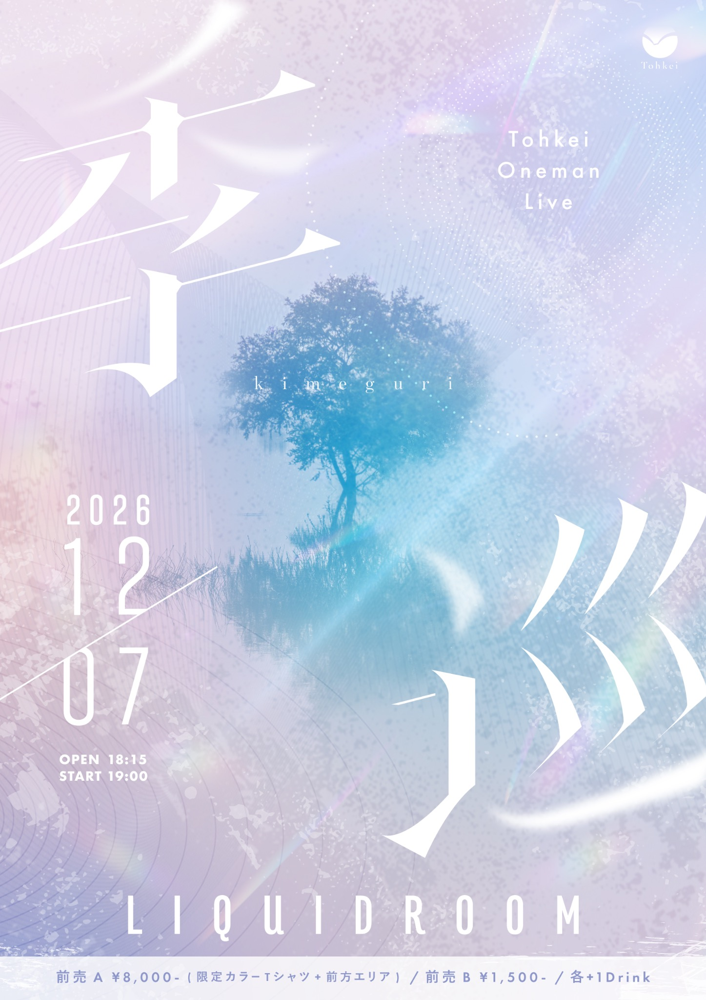
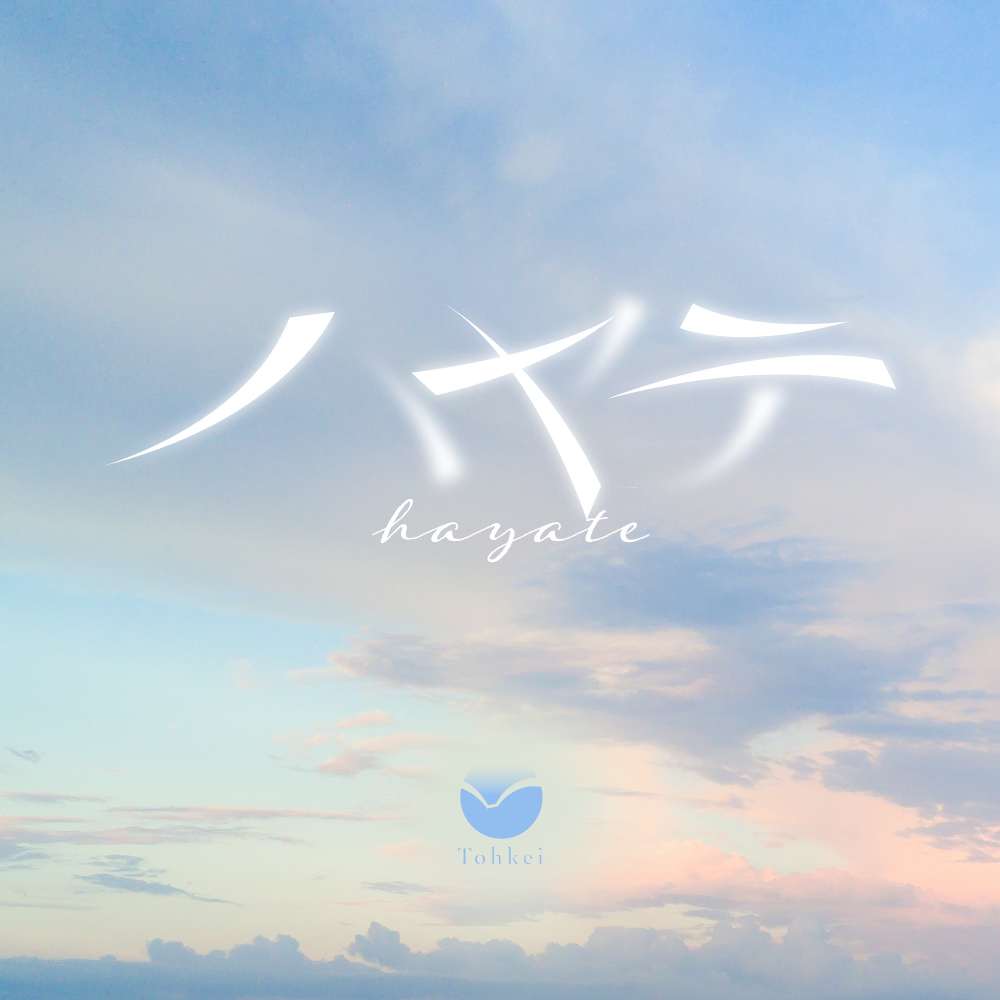

倒景(とうけい)という単語には水面に映る逆さまの影という意味があり、水たまりから大海原まで、どんな時も誰にも寄り添うものでありたいという思いが込められている。

FIRST GUIDE
定期公演の初回来場無料・ご新規様特典・ライブの楽しみ方。
灼けつく太陽や透き通る群青、胸の奥の衝動を描いたサマーチューン
Music Videoを見る ↗
自分自身と向き合うエモーショナルな楽曲。
配信情報を見る ↗

夏の風を思わせる爽やかなサマーポップ。
お気軽にお問い合わせください。